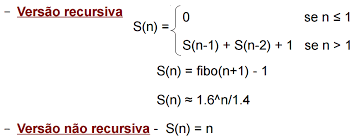
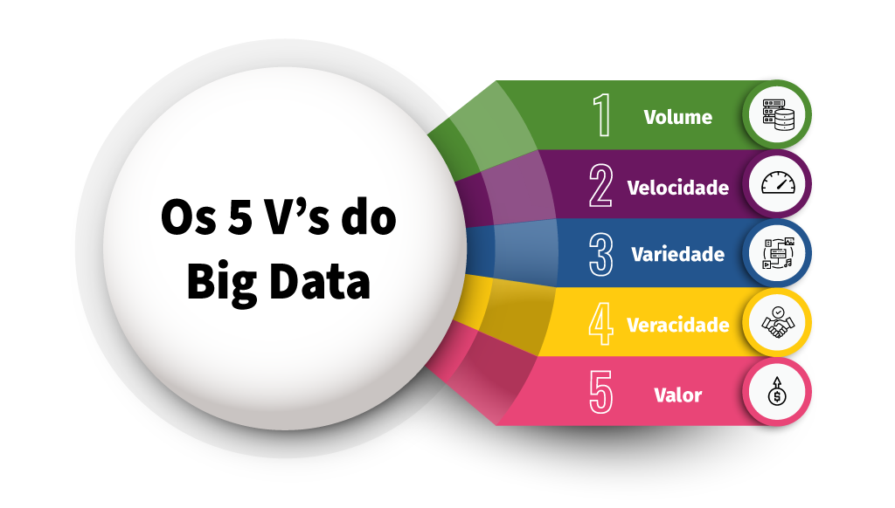
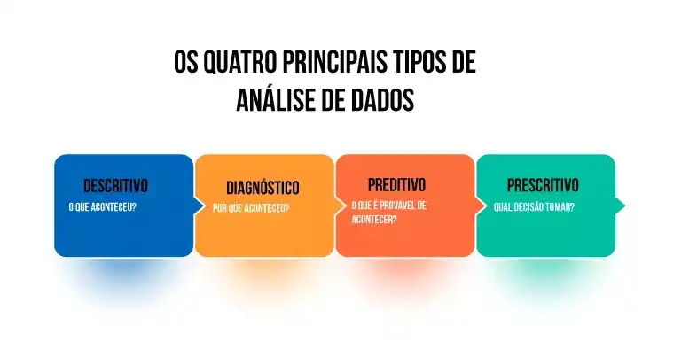
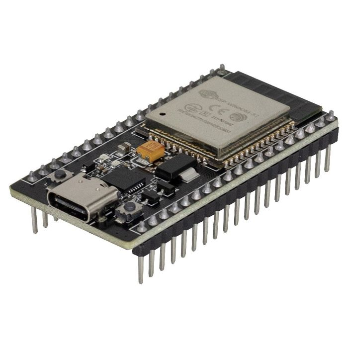

Projetos
Aqui estão alguns dos projetos mais importantes que tive a oportunidade até agora..
Grade curricular
Explore alguns dos projetos que desenvolvemos durante as disciplinas técnicas do curso.


Sobre mim
Será apresentado minha trajetória.
-

2020-2022
Período do Técnico
Conquistei a formação do em Técnico em Análise de Sistemas, com grandes aprendizados, conheci grandes amigos nesse tempo e desenvolvi muitas habilidas.
-

2023-2024
Cursando Faculdade
Estou cursando Análise e Desenvolvimento de Sistemas na FATEC-JALES, buscando desenvolver habilidades e conhecimentos.
-

15 de maio de 2023
Estágio na Precisão Sistemas
Tive a oportunidade de participar do processo seletivo realizado pela empresa Precisão Sistemas, oferecendo vaga de estágio remunerado, fui selecionado, uma grande felicidade para mim, um projeto inovador.
-
Continua...

Contato
Preencha o formulário para entrar em contato comigo.
SIGOM
Sistema de Gerenciamento de Oficina Mecânica.
Este projeto foi escolhido pois a alta demanda de veículos e tecnologias no mercado se encontra de forma crescente ano após ano, pensando nesse fator, foi proposto um sistema que gerencia a oficina mecânica desde as tarefas simples, como: Cadastros de clientes, veículos, produtos, estoque, até automatizar algumas tarefas.
- Link do Projeto
- Desenvolvido: 2022
appGuigas
Gerenciandor de Oficinas Mecânicas - Mobile.

Este projeto está sendo desenvolvido na aula de React-Native com o intuito de aprendizado
- Link do Projeto
- Em Desenvolvimento 2023
SGED
Sistema de Gerenciamento de Documentos

No projeto em que estou
envolvido, estamos focados em desenvolver um sistema que gerencie todos os
documentos de obras aprovados pela Prefeitura de Jales.
Anteriormente, a prefeitura contava com um sistema semelhante, mas que ficou
desatualizado e acabou caindo em desuso. Portanto, aproveitando tecnologias
recentes, estamos iniciando o desenvolvimento de um novo sistema. Optamos por
utilizar uma abordagem Web API, implementada em C# e conectada com React para a
interface do usuário. O banco de dados escolhido para armazenar as informações é o
PostgreSQL.
Nosso objetivo vai além de apenas atender aos requisitos técnicos; buscamos oferecer
uma solução moderna e eficiente que não só simplifique o gerenciamento de documentos
de obras, mas também contribua para superar os desafios enfrentados por
profissionais envolvidos nesse processo. Estamos comprometidos em entregar um
sistema de qualidade que faça a diferença na otimização dessas atividades.
Link do Repositório: https://github.com/Gui-Angelo-Silva/ProjetoIntegrador
Engenharia de Software
A engenharia de software visa aplicar princípios sistemáticos para desenvolver software eficiente e confiável, garantindo que os sistemas criados sejam robustos, entregues no prazo, dentro do orçamento e atendam às necessidades dos usuários.
Diagrama de Classe
Um diagrama de classe é uma ferramenta visual usada na programação orientada a objetos para representar a estrutura e as relações entre as classes em um sistema. Aqui estão os principais elementos:
Classe: Representa um conceito do sistema, podendo ter variáveis(atributos) e funções (métodos).
Atributo: É uma característica de uma classe, como o nome e tipo de dado.
Método: É uma operação que uma classe pode realizar, como funções ou procedimentos.
Relações: As relações podem ter diversos tipos como Associação, Herança e Agregação e Composição.
Visibilidade: Define quem pode acessar os atributos e métodos (público, privado, protegido).
Diagrama de Casos de Uso

Um diagrama de caso de uso é uma representação visual que descreve as interações entre diferentes atores (usuários ou sistemas externos) e um sistema. Aqui está uma explicação resumida:
Ator: Representa um usuário ou sistema que interage com o sistema.
Caso de Uso: Descreve uma funcionalidade específica do sistema que proporciona valor a um ator.
Associação: Linhas conectam atores aos casos de uso para mostrar quem está envolvido em cada interação.
Sistema: Representado por um retângulo, englobando todos os casos de uso.
Inclusão ou Extensão: Indicam relacionamentos entre casos de uso, onde um caso de uso pode incluir ou estender outro.
Diagrama de Sequência

Um diagrama de sequência é uma representação visual que mostra a interação entre objetos em uma determinada sequência de tempo. Aqui está uma explicação resumida:
Objeto: Representa uma entidade ou instância que desempenha um papel na interação.
Linha de Vida: Uma linha vertical que representa a existência ao longo do tempo de um objeto participante na interação.
Mensagens: São setas horizontais indicam mensagens trocadas entre os objetos, podendo ser síncronas (representadas por uma linha contínua) ou assíncronas (representadas por uma linha pontilhada).
Ativação e Desativação: Linhas tracejadas ou sólidas na linha de vida mostram quando um objeto está ativo (enviado ou recebendo mensagens) ou inativo.
Estruturas de Dados
Lista 1 - Introdução a Estrutura de Dados

Nesta primeira lista de exercícios, focamos na revisão de conceitos de algoritmos, com ênfase em entrada e saída.
Link do Repositório: https://github.com/Gui-Angelo-Silva/Estrutura-de-Dados-C-Introducao
Lista 2 - Exercícios Sobre Estrutura Condicional

Essas estruturas condicionais permitem verificar condições e ajustar o fluxo de execução do algoritmo, possibilitando a definição de ações específicas para diferentes cenários. Essa capacidade é fundamental para alcançar resultados precisos no desenvolvimento de sites e aplicações.
Link do Repositório: https://github.com/Gui-Angelo-Silva/Estrutura-de-Dados-C-Condicional
Lista 3 - Exercícios Sobre Laço de Repetição

Um laço de repetição, também conhecido como loop, é uma estrutura de programação que executa um bloco de código repetidamente enquanto uma condição específica for verdadeira. Ele permite automatizar tarefas repetitivas, melhorando a eficiência do código. Existem diferentes tipos de loops, como o "for", "while" e "do-while", cada um com sua aplicação específica.
Link do Repositório: https://github.com/Gui-Angelo-Silva/Estrutura-de-Dados-C-Laco
Lista 4 - Exercícios Sobre Função
Uma função em programação é um bloco de código designado para realizar uma tarefa específica. Ela é definida uma vez e pode ser chamada (invocada) várias vezes no programa. As funções ajudam a organizar o código, promovendo a reutilização e a modularidade, além de simplificar a compreensão do programa ao dividir tarefas em partes menores e mais gerenciáveis.
Link do Repositório: https://github.com/Gui-Angelo-Silva/Estrutura-de-Dados-C-Funcao
Lista 5 - Exercícios Sobre Matriz e Vetor

Em programação, um vetor (ou array) é uma coleção ordenada de elementos do mesmo tipo, acessados por índices. Ele armazena dados de forma sequencial.
Uma matriz é uma estrutura bidimensional que organiza elementos em linhas e colunas, formando uma tabela. Cada elemento é acessado por dois índices: um para a linha e outro para a coluna. Matrizes são úteis para representar dados tabulares e tabelas bidimensionais.
Link do Repositório: https://github.com/Gui-Angelo-Silva/Estrutura-de-Dados-C-Matriz
Pilha e Fila
Foi conduzida uma atividade avaliativa para reforçar os conceitos de pilha e fila, na qual os participantes foram desafiados a implementar essas estruturas de dados. O objetivo era criar um código que permitisse ao usuário decidir quais operações realizar, proporcionando uma experiência prática na manipulação dessas estruturas durante a execução do programa.
Pilha: Uma pilha é uma estrutura de dados linear que segue o princípio LIFO (Last In, First Out), onde o último elemento inserido é o primeiro a ser removido. Elementos são adicionados (empilhados) e removidos (desempilhados) apenas do topo da pilha.
Fila: Uma fila é uma estrutura de dados linear que segue o princípio FIFO (First In, First Out), onde o primeiro elemento inserido é o primeiro a ser removido. Elementos são adicionados (enfileirados) no final da fila e removidos (desenfileirados) do início da fila.
Link do Repositório: https://github.com/Gui-Angelo-Silva/Estrutura-de-Dados-Pilha-Fila
Árvore AVL
Uma árvore AVL (Adelson-Velsky e Landis) é uma estrutura de dados de árvore binária de busca balanceada. A característica principal é que a diferença de altura entre as subárvores esquerda e direita de qualquer nó (fator de balanceamento) é mantida em um intervalo específico, geralmente -1, 0 ou 1. Isso garante uma busca eficiente e operações de inserção e remoção rápidas, mantendo a árvore praticamente balanceada. Caso a árvore se torne desbalanceada após uma operação, são realizadas rotações para restaurar o equilíbrio.
Link do Repositório: https://github.com/Gui-Angelo-Silva/ams-avl-tree
Gestão Ágil de Projetos
O que é Gestão Agil de Projetos?

A gestão ágil de projetos é uma abordagem flexível e colaborativa para gerenciar projetos, enfatizando entregas incrementais, adaptação a mudanças, e colaboração intensa entre equipes e clientes. Métodos ágeis, como Scrum ou Kanban, priorizam a entrega contínua de valor ao cliente, dividindo o projeto em iterações (sprints), promovendo a transparência e ajustes frequentes com base no feedback. O foco está na resposta rápida a mudanças e na maximização da eficiência e qualidade ao longo do tempo.
Durante o ano, utilizamos o Azure DevOps em conjunto com a metodologia SCRUM para auxiliar o desenvolvimento do Projeto Integrador.

O Azure DevOps é uma plataforma da Microsoft que fornece um conjunto integrado de ferramentas para gerenciamento de código-fonte, build, teste, entrega contínua e colaboração em equipes de desenvolvimento de software. Ele suporta o ciclo de vida completo do desenvolvimento de software, desde o planejamento até a implantação, facilitando a automação de processos e a colaboração eficiente entre desenvolvedores e equipes de operações.
Metodologia Scrum
O Scrum é uma metodologia ágil de gestão de projetos que enfatiza entregas incrementais e iterativas. Ele divide o desenvolvimento em ciclos chamados sprints, nos quais equipes trabalham em funcionalidades prioritárias. O Scrum promove colaboração intensa, transparência e adaptação contínua, com papéis definidos, como Scrum Master, Product Owner e equipe de desenvolvimento, para otimizar a eficiência e a entrega de valor ao cliente.
Interação Humano Computador - IHC
Objetivo desta matéria

O objetivo da Interação Humano-Computador (IHC) é projetar e melhorar a interação entre seres humanos e sistemas computacionais, visando tornar essa interação eficiente, intuitiva e satisfatória para os usuários. A IHC busca facilitar a utilização de tecnologias, garantindo uma experiência positiva, acessível e adaptada às necessidades dos usuários.
Ao longo do ano, foram criados alguns protótipos como exercício prático das concepções abordadas durante as aulas, utilizando a ferramenta Figma.

O Figma é uma ferramenta de design colaborativo baseada em nuvem, utilizada para criar interfaces de usuário, protótipos e designs interativos. Ele permite que várias pessoas colaborem simultaneamente em um projeto, oferecendo recursos de design em tempo real e facilitando a comunicação entre membros de uma equipe. O Figma é amplamente utilizado para o desenvolvimento de aplicativos e websites, proporcionando eficiência e flexibilidade no processo de design.
OGuicário
Durante uma atividade dada em sala de aula, realizei o desenvolvimento do aplicativo
OGuicário, voltado
para perfumaria. A loja é conhecida por receber feedbacks positivos, e o design do
aplicativo, realizado no Figma, destaca-se por sua visualização limpa e agradável.
Para acessar o projeto
Clique
Aqui
Projeto Integrador I
Entrevista com o Cliente

O Projeto Integrador I no nosso curso trouxe uma abordagem inovadora ao trazer um desafio real para dentro da faculdade em conjunto com a parceria da empresa Precisão Sistemas. Isso proporciona uma oportunidade única para abordarmos questões práticas e oferecer soluções concretas.
Sistema de Gerenciamento de Documentos - SGED
No projeto em que estou
envolvido, estamos focados em desenvolver um sistema que gerencie todos os
documentos de obras aprovados pela Prefeitura de Jales.
Anteriormente, a prefeitura contava com um sistema semelhante, mas que ficou
desatualizado e acabou caindo em desuso. Portanto, aproveitando tecnologias
recentes, estamos iniciando o desenvolvimento de um novo sistema. Optamos por
utilizar uma abordagem Web API, implementada em C# e conectada com React para a
interface do usuário. O banco de dados escolhido para armazenar as informações é o
PostgreSQL.
Nosso objetivo vai além de apenas atender aos requisitos técnicos; buscamos oferecer
uma solução moderna e eficiente que não só simplifique o gerenciamento de documentos
de obras, mas também contribua para superar os desafios enfrentados por
profissionais envolvidos nesse processo. Estamos comprometidos em entregar um
sistema de qualidade que faça a diferença na otimização dessas atividades.
Link do Repositório: https://github.com/Gui-Angelo-Silva/ProjetoIntegrador
Banco de Dados
Técnicas Avançadas de Banco de Dados Relacional e Não Relacional

Um Banco de Dados é um sistema organizado para armazenar e gerenciar informações de forma estruturada. Ele permite a criação, atualização, leitura e exclusão de dados de maneira eficiente. Esses dados podem variar desde informações simples até conjuntos complexos de dados inter-relacionados. O principal objetivo é proporcionar um meio para a recuperação rápida e precisa de informações, facilitando o acesso e manipulação dos dados de forma organizada.
Conceitos Adquiridos
Inner Join: Uma cláusula que facilita a união de duas ou mais
tabelas, contanto que haja relação entre todas elas.
View: Uma abordagem alternativa para visualizar dados de uma ou
mais entidades (tabelas) em um banco de dados. Pode ser considerada uma tabela
virtual ou uma consulta armazenada.
Trigger: Uma estrutura no banco de dados que age como uma função
acionada por determinadas ações, geralmente relacionadas a operações de inserção,
exclusão e atualização de dados.
Procedures: Stored Procedure, ou Procedimento Armazenado, é uma
coleção de comandos SQL armazenada para uso no banco de dados. Armazena tarefas
repetitivas e pode aceitar parâmetros para personalização da execução.
SubConsulta: Uma instrução SELECT (SELECT... FROM... WHERE...)
incorporada em outra instrução SELECT, podendo ser utilizada também em instruções
INSERT, DELETE e UPDATE como parte da cláusula WHERE.
Banco de Dados Utilizados

O SQL Server é um sistema de gerenciamento de banco de dados relacional desenvolvido pela Microsoft. Ele fornece um ambiente robusto para armazenamento, recuperação e manipulação eficiente de dados. O SQL Server suporta a linguagem SQL e oferece recursos abrangentes para administração, segurança e integração com outras tecnologias Microsoft. É amplamente utilizado em ambientes corporativos para gerenciar dados de forma escalável e confiável.

O MongoDB é um sistema de gerenciamento de banco de dados NoSQL (Not Only SQL) orientado a documentos. Ele armazena dados em formato de documentos JSON (JavaScript Object Notation) flexíveis, o que significa que os campos podem variar de documento para documento dentro de uma coleção. Isso proporciona uma estrutura dinâmica e escalabilidade horizontal fácil. O MongoDB é amplamente utilizado em aplicações web e móveis, onde a flexibilidade e a escalabilidade são essenciais. Ele permite consultas poderosas, suporta índices e oferece recursos avançados para manipulação de dados.
Técnicas Avançadas de Programação
Projetos Desenvolvidos

Ao longo do ano, diversos projetos foram concebidos nesta disciplina, todos implementados utilizando a linguagem de programação C# e a IDE Visual Studio. Para armazenar as informações registradas nos projetos, optamos pelo banco de dados PostgreSQL. Abaixo, estão os links para cada projeto desenvolvido durante este período.
Algoritmo: https://github.com/Gui-Angelo-Silva/Trabalho-Alg-CSharp
Lanchonete: https://github.com/Gui-Angelo-Silva/Lanchonete
Biblioteca: https://github.com/Gui-Angelo-Silva/Tecnicas-Avancadas-de-Programacao/tree/main/AtividadeCRUDCsharp
Locadora de Carro: https://github.com/Gui-Angelo-Silva/Tecnicas-Avancadas-de-Programacao/tree/main/LocacaoCarro
Herança: https://github.com/Gui-Angelo-Silva/Tecnicas-Avancadas-de-Programacao/tree/main/ExemploHeranca
Abaixo irei deixar as tecnologias que foram utilizadas.
Visual Studio
O Visual Studio é um ambiente de desenvolvimento integrado (IDE) da Microsoft, amplamente utilizado para criar, depurar e gerenciar projetos de software. Oferece suporte a várias linguagens de programação, incluindo C#, C++, e F#, e fornece ferramentas abrangentes para facilitar o desenvolvimento de aplicativos Web, desktop e móveis. O Visual Studio inclui recursos como depuração visual, Intellisense (sugestões de código), ferramentas de design de interface gráfica, e integração com sistemas de controle de versão, proporcionando uma plataforma completa para o ciclo de vida do desenvolvimento de software.
Linguagem C#

C# (pronuncia-se "C sharp") é uma linguagem de programação desenvolvida pela Microsoft. Ela faz parte da plataforma .NET e é projetada para criar aplicativos Windows, aplicativos web e outros tipos de software. O C# combina elementos de linguagens como C e C++ com recursos de programação orientada a objetos. Ele é amplamente utilizado no desenvolvimento de software empresarial e é conhecido por sua segurança, eficiência e integração com as tecnologias da Microsoft.
Técnicas Avançadas de Programação Web e Mobile
Objetivo: Desenvolver aplicações por meio da utilização de abordagens em Interface, Eventos, Props, State, Navegação, Multimídia, Notificações, Persistência de Dados, Experiência do Usuário (UX), Serviços RESTFul e Integrações. Além disso, aplicar práticas de versionamento e elaborar a documentação da aplicação. Abaixo irei citar os frameworks trabalhados ao longo do ano.

React Native é um framework de desenvolvimento de aplicativos móveis que permite criar aplicações nativas para iOS e Android usando JavaScript e React. Ele permite o desenvolvimento de aplicativos móveis com uma base de código compartilhada, facilitando a manutenção e a implementação de novos recursos em ambas as plataformas de forma eficiente.
Flutter é um framework de código aberto desenvolvido pelo Google para a criação de aplicativos nativos para dispositivos móveis, web e desktop a partir de uma única base de código. Utilizando a linguagem de programação Dart, o Flutter permite uma experiência de desenvolvimento rápida e oferece uma interface de usuário altamente personalizável, resultando em aplicativos visualmente atraentes e de alto desempenho.
Projetos Realizados
AppGuigas:
Este foi meu projeto inaugural no início do ano, centrado em uma loja de peças
automotivas. Nele, os usuários tinham a capacidade de cadastrar e gerenciar seu
inventário de peças, funcionando como uma plataforma de gestão.
Link do Repositório: https://github.com/Gui-Angelo-Silva/appGuigas
AnotaFilm:
O propósito deste projeto consistiu em registrar informações sobre filmes, sendo
implementado por meio do framework Flutter em conjunto com o banco de dados SQLite.
Link do Repositório: https://github.com/Gui-Angelo-Silva/AulaBoer
CRUDFirestore:
Este projeto foi criado para explorar novas ferramentas, utilizando o Firestore em
integração com o Flutter.
Link do Repositório: https://github.com/Gui-Angelo-Silva/Projeto-Crud-Firestore
Sistemas Operacionais
Organização de Computadores e Sistemas Operacionais

Entender os conceitos de funções racionais, trigonométricas, exponenciais e logarítmicas é essencial para aplicá-los no desenvolvimento de programas computacionais. Além disso, o conhecimento e uso da teoria de conjuntos e subconjuntos são fundamentais no desenvolvimento de bancos de dados. A aplicação de relações binárias, equivalentes e de ordem é crucial para propor soluções em aplicações e sistemas durante o desenvolvimento de algoritmos.
Geração de Computadores
Primeira Geração (Década de 1940): Caracterizada por válvulas
eletrônicas, com o exemplo nótavel do ENIAC.
Segunda Geração (Década de 1950): Introduziu os transistores,
reduziu seu tamanho e aumento de confiabilidade e o surgimento de linguagem de
programação de alto nível.
Terceira Geração (Década de 1960): Utilização de circuitos
integrados, houve melhorias na eficiência e redução de custos e também o surgimento
dos microcomputadores.
Quarta Geração (Década de 1970): Os microprocessadores foram
introduzidos, computadores pessoais tornaram-se possíveis e os avanços
significativos em termos de portabilidade.
Quinta Geração (Década de 1980): Enfoque em inteligência
artificial, pesquisa intensiva em processadores paralelos e o desenvolvimento de
linguagens de programação avançadas.
Atualidade: Inovações contínuas em hardware e software, exploração
de tecnologias emergentes como inteligência artificial, aprendizado de máquina,
computação quântica e redes neurais com o crescimento da computação em nuvem e
Internet das Coisas (IoT).
Sistemas Numéricos

Sistemas numéricos em sistemas operacionais referem-se à representação e manipulação de dados usando diferentes bases numéricas, como binária, octal, decimal e hexadecimal. Os sistemas operacionais realizam operações aritméticas e lógicas nesses diferentes sistemas, sendo a base binária fundamental para a comunicação direta com a arquitetura de hardware dos computadores. A capacidade de converter entre sistemas numéricos é essencial para processamento eficiente de dados e comunicação entre hardware e software nos sistemas operacionais.
Memória

A memória em sistemas operacionais refere-se ao espaço onde dados e programas são
armazenados temporariamente para execução. Existem duas principais categorias de
memória:
1 - Memória Principal (RAM): Utilizada para armazenar dados e
programas em execução, possui volatilidade, ou seja, os dados são perdidos quando o
sistema é desligado e o sistema operacional gerencia o acesso à memória RAM para
garantir o funcionamento eficiente dos programas.
2 - Memória Secundária (Disco, SSD, etc.): Usada para armazenamento
de longo prazo, não é volátil, mantendo os dados mesmo quando o sistema é desligado
e o sistema operacional gerencia a transferência de dados entre a memória principal
e a memória secundária por meio de técnicas como paginação e segmentação.
Sistemas Operacional

Foram abordados conceitos essenciais de Sistemas Operacionais, incluindo a distinção entre Modo Kernel e Modo Usuário, que refere-se às diferentes permissões de execução. Além disso, discutiu-se a evolução dos computadores ao longo do tempo e mencionaram-se diversos tipos de Sistemas Operacionais, evidenciando a diversidade de sistemas que atendem às necessidades específicas dos usuários e das plataformas. Essa visão abrangente proporciona uma compreensão inicial das bases e variedades dos Sistemas Operacionais.
Processos
Em sistemas operacionais, um processo é uma instância em execução de um programa. Ele consiste no código do programa, dados associados e o contexto de execução. Um processo tem seu próprio espaço de memória e recursos, sendo gerenciado pelo sistema operacional. O sistema operacional coordena a execução de múltiplos processos, permitindo a multitarefa. Cada processo pode estar em diferentes estados, como pronto, em execução ou bloqueado, dependendo de sua interação com recursos do sistema. O conceito de processos é fundamental para a eficiente execução de tarefas e o compartilhamento de recursos em um ambiente computacional.
Thread

Uma thread em sistemas operacionais é a menor unidade de execução dentro de um processo. Ela compartilha o mesmo espaço de memória e recursos do processo pai, mas possui seu próprio contador de programa e conjunto de registradores. Threads possibilitam a execução concorrente dentro de um processo, permitindo tarefas paralelas. Existem dois tipos principais de threads: threads de usuário e threads de kernel. As threads são gerenciadas pelo sistema operacional e são essenciais para a eficiência em tarefas multitarefa, facilitando a execução simultânea de operações dentro de um único processo.
Sincronização
A sincronização em sistemas operacionais refere-se à coordenação de atividades entre processos ou threads para evitar conflitos e garantir a consistência dos dados. Mecanismos de sincronização, como semáforos, mutexes e monitores, são utilizados para controlar o acesso concorrente a recursos compartilhados. Isso previne condições de corrida e garante que operações críticas sejam executadas de forma ordenada, promovendo a integridade e coerência do sistema durante a execução concorrente de múltiplos processos ou threads.
Gerência do Processador
A gerência do processador em sistemas operacionais envolve a alocação eficiente do tempo de processamento entre os diversos processos em execução. O escalonador de processos é responsável por decidir qual processo deve ser executado em determinado momento, utilizando algoritmos de escalonamento. Isso visa otimizar o uso do processador, minimizar o tempo de espera dos processos e proporcionar uma execução equitativa. O escalonador pode ser preemptivo, interrompendo processos em execução para dar chance a outros, ou não preemptivo, permitindo que um processo complete sua execução antes de trocar para outro. Essa gestão é crucial para garantir a eficiência e a responsividade do sistema.
Gerenciamento de Memória Virtual
O gerenciamento de memória virtual em sistemas operacionais é uma técnica que permite aos programas executarem em espaços de endereço virtuais, que podem ser maiores que a quantidade física de RAM disponível. Isso é alcançado através do uso de páginas ou segmentos, que são movidos entre a memória RAM e o armazenamento secundário, como um disco rígido, conforme necessário. O sistema operacional decide quais partes do programa devem estar na memória RAM em um determinado momento, permitindo a execução eficiente de processos, mesmo quando a memória física é limitada. Esse gerenciamento otimiza o uso da memória e melhora a capacidade de resposta do sistema.
Sistema de Arquivos

O sistema de arquivos em sistemas operacionais é a estrutura utilizada para organizar e armazenar dados em dispositivos de armazenamento, como discos rígidos. Ele fornece métodos padronizados para a criação, leitura, gravação e exclusão de arquivos, além de gerenciar diretórios para organizar esses arquivos. O sistema de arquivos também é responsável pelo controle de permissões de acesso aos arquivos e pela manutenção de metadados, como datas de criação e modificação. Essa camada essencial facilita a interação entre o software e o hardware de armazenamento, garantindo a organização eficiente e o acesso confiável aos dados.
Gerência de Dispositivos

A gerência de dispositivos em sistemas operacionais envolve o controle e a coordenação das interações entre o software e os periféricos do hardware. Os drivers de dispositivos são responsáveis por traduzir as solicitações do sistema operacional para operações específicas do hardware. O gerenciador de dispositivos facilita a detecção, instalação e controle dos drivers, garantindo que os dispositivos conectados sejam reconhecidos e operem corretamente. Isso inclui a alocação de recursos, como interrupções e endereços de memória, além de lidar com eventos como falhas e desconexões. Uma eficiente gerência de dispositivos é crucial para o funcionamento adequado e a interoperabilidade dos componentes do sistema.
Sistema com Múltiplos Processadores

Sistemas operacionais que suportam múltiplos processadores, conhecidos como sistemas multiprocessadores, permitem a execução simultânea de vários processos em diferentes núcleos ou processadores físicos. Isso resulta em um aumento significativo no desempenho e na capacidade de processamento do sistema. O sistema operacional é responsável pelo escalonamento eficiente de tarefas entre os processadores, gerenciando a sincronização e a comunicação entre eles. O paralelismo oferecido por sistemas multiprocessadores é crucial para lidar com cargas de trabalho intensivas e otimizar a utilização dos recursos computacionais disponíveis.
I.C. e Modelos de Negócios na Era Digital

Desenvolver um modelo de negócios por meio da aplicação de metodologias inovadoras, utilizar ferramentas de mercado para a elaboração de um plano de negócios, aplicar as melhores práticas financeiras na execução de projetos, incorporar práticas tecnológicas avançadas na elaboração do plano de negócios, e empregar técnicas eficazes de resolução de problemas e colaboração em equipe.
Projeto Desenvolvido
O Pulse Blind é um smartwatch inovador projetado para aumentar a independência, segurança e conectividade de pessoas com deficiência visual em ambientes públicos. Este dispositivo transforma o relógio tradicional em um companheiro de navegação confiável, oferecendo recursos como GPS, Bluetooth e Wi-Fi para capacitar os usuários a navegar com confiança no mundo interconectado, principalmente dependendo do tato e da audição.
Matemática Discreta
Entender os princípios de funções racionais, trigonométricas, exponenciais e logarítmicas, visando sua aplicação no desenvolvimento de programas computacionais. Familiarizar-se com a teoria de conjuntos e subconjuntos para a construção de bancos de dados. Aplicar conceitos de relações binárias, equivalentes e de ordem no desenvolvimento de algoritmos para propor soluções em aplicações e sistemas.
Lógica Booleana
A lógica booleana desempenha um papel crucial em sistemas de segurança ao definir
condições para ativar alarmes e controlar o acesso. Além disso, ela é essencial em
circuitos eletrônicos, sendo fundamental para o design e controle de dispositivos
digitais, como processadores e memórias.
Expressões lógicas são construções matemáticas que combinam variáveis booleanas
usando operadores como AND, OR e NOT. Essas expressões desempenham um papel crucial
em programação, circuitos digitais e na tomada de decisões condicionais.
Tabela Verdade
As tabelas-verdade apresentam todas as combinações possíveis de valores de entrada,
simplificando a análise do comportamento de expressões lógicas em diferentes
cenários. Essas operações são essenciais para a compreensão e avaliação sistemática
da lógica booleana. No contexto, foram empregadas as operações NOT, OR e AND.
Operações condicionais são estruturas de controle de fluxo que realizam ações
específicas com base em condições lógicas. Essenciais na programação, permitem tomar
decisões dinâmicas e direcionar o fluxo do programa de acordo com as circunstâncias
apresentadas.
Teoria dos Conjuntos
A teoria dos conjuntos revisita conceitos fundamentais, tais como elementos, união e
interseção. Suas operações básicas, incluindo união, interseção e complemento,
estabelecem a base para a análise e manipulação de conjuntos em disciplinas como
matemática e ciência da computação.
Intervalos numéricos representam conjuntos contínuos de números reais, definidos por
seus extremos. Podem ser abertos (excluindo limites), fechados (incluindo limites)
ou meia-abertos.
A análise combinatória trata da contagem e organização de elementos em conjuntos
finitos. Arranjos envolvem a ordenação, permutações referem-se à disposição e
combinações aleatórias à escolha de elementos sem considerar a ordem. Esses
conceitos são fundamentais na resolução de problemas que envolvem a contagem e
disposição de elementos em diversos contextos matemáticos e práticos.
Teoria dos Grafos
A teoria dos grafos é um ramo da matemática que estuda relações entre objetos representados por vértices (ou nós) e as conexões entre esses objetos representadas por arestas (ou arcos). Grafos podem ser direcionados (quando há uma orientação nas arestas) ou não direcionados. Eles são usados para modelar uma variedade de situações práticas, como redes sociais, mapas de estradas, programação de computadores, entre outros. Algoritmos de grafos são comumente aplicados para resolver problemas relacionados a essas representações e encontrar soluções eficientes em diversas áreas.
Funções Matemáticas

Funções matemáticas, como lineares, afins, quadráticas, exponenciais, logarítmicas e
trigonométricas, desempenham funções específicas na descrição e análise de fenômenos
matemáticos e científicos. Os alunos apresentaram essas funções como parte do estudo
e compreensão de diversos contextos matemáticos e científicos.
Relações matemáticas envolvem pares ordenados, resultantes do produto cartesiano de
conjuntos. Relações binárias descrevem associações entre elementos de dois
conjuntos, com o domínio representando valores de entrada e a imagem os valores de
saída. A relação inversa inverte a ordem dos pares ordenados, proporcionando uma
perspectiva contrária na associação entre os conjuntos, sendo essencial na análise
de mapeamentos e relações.
Aritmética Computacional
Aritmética computacional envolve a manipulação de números decimais e binários, desempenhando um papel crucial em sistemas digitais. Operações fundamentais, como adição e subtração de números inteiros, são essenciais para a eficiência dos cálculos computacionais.
Recursividade
Recursividade é a definição de uma operação em termos de si mesma, sendo comum em conceitos matemáticos e programação para modelar padrões iterativos complexos. Em sequências recursivas, cada termo depende dos anteriores. Operações recursivas resolvem problemas decompondo-os em instâncias mais simples do mesmo problema.
Método de Jacobi
O Método de Jacobi é uma abordagem iterativa utilizada na resolução numérica de sistemas lineares. Ele consiste em decompor o problema em iterações sucessivas, avançando progressivamente em direção a uma solução aproximada ao longo de cada iteração. Esse método é eficaz para resolver sistemas de equações lineares de maneira incremental e é comumente empregado em contextos computacionais e numéricos.
Solução Numérica de Sistemas

A resolução numérica de equações não-lineares procura encontrar raízes aproximadas por meio de métodos computacionais. Por outro lado, a solução numérica de sistemas de equações lineares emprega técnicas para encontrar soluções aproximadas para conjuntos de equações simultâneas. Ambas são áreas cruciais na análise numérica e computacional.
Business Intelligence e Big Data

Business Intelligence (BI) é o conjunto de processos e ferramentas que transformam
dados brutos em informações úteis para a tomada de decisões empresariais, utilizando
dashboards, visualizações e análises preditivas para identificar tendências e
otimizar processos.
Big Data, por sua vez, refere-se ao enorme volume de dados gerados diariamente de
diversas fontes, caracterizados por volume, variedade e velocidade, e envolve a
coleta, armazenamento e análise desses dados para extrair insights valiosos que
orientam decisões estratégicas e operacionais, utilizando tecnologias como Hadoop e
Spark.
Os 5Vs do Big Data

Os 5Vs do Big Data são características fundamentais que definem os desafios e as
oportunidades associadas ao gerenciamento e à análise de grandes volumes de dados.
Aqui está um resumo de cada um dos 5Vs:
Volume: Refere-se à quantidade massiva de dados gerados
diariamente. Com o advento da
internet, redes sociais, dispositivos móveis e IoT (Internet das Coisas), a
quantidade de dados produzidos cresceu exponencialmente, exigindo sistemas robustos
para armazenamento e processamento.
Velocidade: Trata da rapidez com que os dados são gerados,
processados e analisados. A
velocidade é crucial para aplicações que requerem respostas em tempo real ou quase
real, como monitoramento de redes sociais, transações financeiras e sistemas de
recomendação.
Variedade: Refere-se aos diferentes tipos de dados que são gerados,
incluindo dados
estruturados (bancos de dados tradicionais), semi-estruturados (XML, JSON) e não
estruturados (texto, imagens, vídeos). A diversidade de formatos e fontes de dados
apresenta desafios para a integração e a análise.
Veracidade: Envolve a qualidade e a confiabilidade dos dados. Com a
grande quantidade de
informações disponíveis, é essencial garantir que os dados sejam precisos e
confiáveis, pois dados de má qualidade podem levar a análises incorretas e decisões
equivocadas.
Valor: Diz respeito à capacidade de extrair insights valiosos dos
dados. O objetivo final do Big Data é transformar grandes volumes de dados brutos em
informações úteis que podem ajudar na tomada de decisões estratégicas, melhorar a
eficiência operacional e criar vantagens competitivas.
Siglas do Big Data
OLTP, OLAP, ROLAP, MOLAP, HOLAP e DOLAP são siglas que representam diferentes abordagens e tecnologias para armazenamento, processamento e análise de dados em ambientes empresariais. Essas tecnologias são essenciais para suportar a análise de dados e a tomada de decisões em diversos contextos empresariais, permitindo que as organizações extraiam insights valiosos de seus dados.
Data Lake
Um Data Lake armazena grandes volumes de dados em seu formato bruto, suportando dados estruturados, semiestruturados e não estruturados, facilitando análises integradas e insights eficientes.
Data Swamp

Data Swamp é como um pântano de dados: desorganizado, confuso e de pouco valor. Surge quando a gestão e a qualidade dos dados não são priorizadas, dificultando sua utilização eficaz para análises e tomadas de decisão.
Tipos de Dados
Dados podem ser classificados em estruturados (organizados em formatos definidos, como tabelas de bancos de dados), não estruturados (incluindo texto livre e imagens) e semiestruturados (como documentos XML e JSON). Cada tipo requer abordagens específicas para armazenamento e análise.
Tipos de Análise de Dados
Na análise de dados, as abordagens diagnóstica, descritiva, prescritiva e preventiva desempenham papéis distintos. A análise diagnóstica identifica causas de problemas, enquanto a descritiva resume os dados atuais. A prescritiva recomenda ações com base na análise, e a preventiva antecipa e evita problemas futuros, formando um conjunto abrangente para orientar decisões e melhorias.
Data Warehouse

Um data warehouse é um repositório centralizado de dados que consolida informações de diversas fontes para facilitar análises e relatórios detalhados, fornecendo uma visão unificada para suportar a tomada de decisões estratégicas.
Data Mart
Um Data Mart é um subconjunto especializado de um data warehouse, focado em atender às necessidades específicas de um departamento ou equipe dentro de uma organização, fornecendo acesso simplificado e rápido a dados relevantes para análises e relatórios detalhados.
Data Mining
Data Mining é a prática de explorar grandes conjuntos de dados em busca de padrões e insights valiosos. Usando técnicas estatísticas e algoritmos de aprendizado de máquina, ajuda na tomada de decisões estratégicas e na identificação de oportunidades de negócios.
ETL x ELT
ETL (Extract, Transform, Load) abrange a extração, transformação e carregamento de dados, enquanto ELT (Extract, Load, Transform) foca na carga rápida dos dados seguida pela transformação posterior, otimizando a eficiência do processo e atendendo a diferentes necessidades de projeto.
Staging Area
A Staging Area é uma etapa intermediária no processo de ETL, onde os dados são temporariamente armazenados, limpos e transformados antes de serem carregados no destino final, garantindo integridade e qualidade durante o processo de integração de dados.
Processo KDD

O processo KDD é uma metodologia que abrange desde a seleção e preparação dos dados até a aplicação de técnicas de mineração para descobrir insights valiosos e desconhecidos, promovendo a tomada de decisões informadas e estratégicas com base nos dados disponíveis.
Power BI

O Power BI é uma poderosa ferramenta de business intelligence desenvolvida pela Microsoft, que permite conectar-se a diversas fontes de dados, criar visualizações interativas e compartilhar insights de maneira eficiente, auxiliando na tomada de decisões estratégicas com base em dados.
Computação em Nuvem

A Computação em Nuvem revoluciona a acessibilidade aos recursos
computacionais,
substituindo a infraestrutura local por serviços disponíveis pela internet,
resultando em economia e escalabilidade para empresas de todos os portes.
Essa abordagem flexível e sob demanda oferece economia de custos e adaptabilidade às
necessidades do negócio, enquanto os provedores de nuvem garantem a segurança e a
integridade dos dados, mantendo alta disponibilidade dos serviços por meio de
redundância e backups automatizados.
Na computação em nuvem, a responsabilidade é compartilhada entre o provedor de
serviços e o cliente. O provedor é responsável pela segurança da infraestrutura,
enquanto o cliente é responsável pela segurança dos dados e aplicativos que utiliza
na nuvem.
IaaS ou Infraestrutura como Serviço
IaaS é um modelo de computação em nuvem que disponibiliza recursos de infraestrutura, como servidores e armazenamento, pela internet, permitindo aos usuários construir e gerenciar plataformas e aplicativos na nuvem sem necessidade de hardware físico.
PaaS ou Plataforma como serviço
PaaS é um modelo de computação em nuvem que disponibiliza uma plataforma completa para desenvolvimento e execução de aplicativos, permitindo aos desenvolvedores criar e implantar soluções de forma rápida e eficiente, sem se preocupar com a infraestrutura subjacente.
SaaS ou Software como serviço
SaaS é um modelo em que aplicativos são hospedados na nuvem e acessados pela internet, dispensando a necessidade de instalação local. Isso oferece flexibilidade e simplifica a experiência do usuário, pois elimina a manutenção e atualização de software localmente.
SLA ou Service Level Agreement
Um SLA é um contrato entre um provedor de serviço e um cliente, detalhando os níveis de serviço esperados e as métricas de desempenho, como tempo de atividade e suporte, garantindo a qualidade do serviço e alinhando as expectativas entre as partes.
Integração e Entrega Contínua (DevOps)
A Integração e Entrega Contínuas (CI/CD) é uma prática essencial da
cultura DevOps
que busca automatizar e otimizar o ciclo de desenvolvimento de software. Na
Integração Contínua (CI), o código é frequentemente integrado em um repositório
compartilhado pelos desenvolvedores, seguido de testes automáticos para garantir sua
qualidade.
Na Entrega Contínua (CD), o código é entregue de forma automatizada
e contínua para
produção, permitindo implementações rápidas e seguras. Essa abordagem traz
benefícios como maior velocidade de entrega de software, redução de erros e falhas,
colaboração eficiente entre equipes e eficiência operacional.
Gerência de Configuração de Software
Gerência de Configuração de Software é o processo de controlar e gerenciar as mudanças no ambiente de desenvolvimento de software. Isso inclui versionamento de código, rastreamento de alterações e garantia de integridade e consistência do sistema ao longo do tempo.
Ferramentas de GCS

As ferramentas de Gerência de Configuração de Software, como Git, SVN, Mercurial, Jenkins, Travis CI, Ansible e Puppet, são essenciais para automatizar processos, controlar mudanças e garantir a consistência no desenvolvimento de software, contribuindo para a eficiência e qualidade dos projetos.
Pipeline
Um pipeline é uma sequência automatizada de etapas, como integração contínua, teste e implantação, que garante a entrega eficiente e de qualidade de software. Ele facilita a automação de processos e a manutenção de um fluxo contínuo de desenvolvimento, contribuindo para a eficiência do ciclo de vida do software.
Automação
Automatização é essencial no DevOps, abrangendo a eliminação de tarefas repetitivas e manuais em todo o ciclo de vida do desenvolvimento e operações de software. Essa prática reduz o tempo dedicado a processos manuais, previne erros humanos e promove maior consistência e confiabilidade nas operações.
Integração Contínua (CI)
A Integração Contínua (CI) é uma abordagem de desenvolvimento em que as alterações de código são regularmente integradas e testadas automaticamente, visando à detecção precoce de problemas e à manutenção da estabilidade do software. Essa prática promove uma colaboração mais eficaz entre os membros da equipe, permitindo uma entrega mais consistente e confiável do software ao longo do tempo.
Jenkins
Jenkins é uma ferramenta de automação de código aberto que permite integração e entrega contínua no desenvolvimento de software, automatizando processos de construção, teste e implantação para garantir uma entrega eficiente e confiável.
Estatística Aplicada
A estatística aplicada é uma disciplina fundamental que se concentra na aplicação
prática de métodos estatísticos para analisar dados e tomar decisões informadas em
uma variedade de campos. Ela envolve a coleta, organização, análise e interpretação
de dados para extrair insights relevantes e embasar processos de tomada de decisão.
Por meio da estatística aplicada, podemos entender padrões, tendências e
variabilidades nos dados, permitindo-nos fazer previsões, testar hipóteses e
resolver problemas do mundo real de forma fundamentada.
População, Amostra e Variáveis

População é o conjunto completo de todos os elementos que estão sob investigação. Amostra é um subconjunto representativo da população usado para inferir características sobre ela. Variáveis: são características mensuráveis que podem ser observadas ou controladas em um estudo estatístico.
Tabela
Tabela é uma forma organizada de apresentar informações, geralmente em filas e colunas, para facilitar a compreensão e análise de dados.
Gráfico
Gráficos são representações visuais de dados, utilizados para mostrar padrões, tendências e relações entre variáveis de forma mais clara e acessível.
Arredondamento
Arredondamento é um processo de ajuste de números para torná-los mais simples ou significativos, geralmente para uma quantidade específica de casas decimais ou para facilitar cálculos.
Os 3 Ms
Média é uma medida estatística que representa o valor típico de um conjunto de
números, calculada pela soma de todos os valores dividida pelo número total de
valores.
Moda é o valor que ocorre com mais frequência em um conjunto de dados, representando
o ponto de maior concentração.
Mediana é o valor central de um conjunto de dados ordenados, onde metade dos valores
estão acima e metade estão abaixo desse valor.
Condicional de Independência
Condicional de independência é uma condição na teoria da probabilidade que afirma que, se duas variáveis aleatórias são independentes quando uma terceira variável é fixada, então elas são independentes mesmo sem essa fixação.
Evento e Espaço Amostral
Evento é um resultado específico ou conjunto de resultados de um experimento ou
processo aleatório, geralmente associado a uma probabilidade de ocorrência.
Espaço Amostral é o conjunto de resultados possíveis de um experimento aleatório. É
fundamental na teoria da probabilidade para definir eventos e calcular
probabilidades. Compreender o espaço amostral é essencial para análise e
interpretação de problemas probabilísticos.
Inteligência Artificial e Aprendizagem de Máquina
A Inteligência Artificial (IA) é um campo da ciência da computação
que se concentra
no desenvolvimento de sistemas capazes de realizar tarefas que normalmente exigiriam
inteligência humana. Isso envolve a criação de algoritmos e modelos que podem
aprender com dados, raciocinar, perceber o ambiente e tomar decisões.
A Aprendizagem de Máquina é um subcampo da IA que se concentra em
sistemas que podem
aprender e melhorar com a experiência. Esses sistemas utilizam algoritmos e modelos
para analisar grandes conjuntos de dados e identificar padrões, possibilitando a
realização de previsões ou tomada de decisões automatizadas.
Ferramentas de Edição
Ferramentas de edição com IA são softwares que empregam algoritmos inteligentes para aprimorar processos de edição. Elas automatizam tarefas complexas, como correção de cor e remoção de ruído, agilizando o trabalho do usuário e permitindo um foco maior na criatividade.
Remix e E-Book

Na área do Remix, a IA é usada para combinar elementos de obras existentes de forma criativa e legal. Já nos E-Books, a IA está transformando a criação e consumo desses livros, desde a geração automática de conteúdo até a personalização da experiência de leitura com recomendações inteligentes.
Chatbot

Chatbots são programas que simulam conversas humanas usando inteligência artificial, comumente usados para atendimento ao cliente e assistência virtual. Eles respondem a perguntas e executam tarefas com base em comandos predefinidos.
Ferramentas de Programação IA
Ferramentas de Programação para IA simplificam o desenvolvimento de soluções de inteligência artificial, fornecendo recursos como aprendizado de máquina e processamento de linguagem natural para criar aplicações inteligentes de forma eficiente.
Árvore de Decisão
A árvore de decisão é um modelo de aprendizado de máquina que representa um conjunto de regras de decisão em uma estrutura de árvore. Cada nó interno da árvore representa uma condição sobre uma variável de entrada, e os ramos indicam os possíveis resultados. É um método amplamente utilizado em classificação e regressão, sendo intuitivo e fácil de interpretar.
Inglês
A jornada de aprender inglês vai além da simples aquisição de habilidades linguísticas; é uma exploração que abre portas para novas culturas, oportunidades profissionais e crescimento pessoal. Ao se aprofundar nesse idioma, você se conecta com diferentes culturas, amplia suas perspectivas e se torna parte de uma comunidade global. Além disso, dominar o inglês pode alavancar sua carreira, permitindo acesso a oportunidades profissionais em todo o mundo.
Modal Verbs
Os modal verbs servem para modalizar o discurso, revelando a intenção, o sentimento
de quem fala. Podem expressar uma atitude mais ou menos forte. Se apresentam nas
suas formas-bases, isto é, no infinitivo, sem a preposição to. Diferentemente dos
outros verbos, os verbos modais não são flexionados nem quanto ao tempo verbal nem
quanto à pessoa, com exceção do verbo have to.
Esses verbos podem ser utilizados para falar sobre probabilidade, certeza,
incerteza, permissão, obrigação, necessidade, proibição, conselho, dever, habilidade
(física ou psicológica).
Pronúncia dos Anos
Até 1999, se separa o ano na metade para pronunciae os números (Exemplo: 1715 - Seventeen fifteen). De 2000 até 2009, a pronuncia é falada tudo junto (Exemplo: 2001 - two thousand (and) one). De 2010 até (...) pode se pronunciar o ano dos dois jeitos, separado ou junto.
Preposições
TIME: AT (at 9:00); YEAR: IN (in 2001); MONTH: IN (in May); DAY: ON (on Monday and Friday); DATE: ON (on May 26th, 1966); PARTS OF THE DAY: IN the morning, IN the afternoon, IN the evening, AT night; HOLIDAYS: AT Easter, AT Christmas, ON Teacher´s Day.
Números Cardinais e Ordinais
Os números cardinais em inglês são usados para contar e indicar quantidade, como "one" (um), "two" (dois), "three" (três), etc. Já os números ordinais indicam a posição ou ordem em uma sequência, como "first" (primeiro), "second" (segundo), "third" (terceiro), etc. Por exemplo, "I have three apples" (Eu tenho três maçãs) usa um número cardinal, enquanto "He finished first in the race" (Ele terminou em primeiro na corrida) usa um número ordinal.
Future Forms

Para certos planos e arranjos futuros, usamos "GOING TO" ou o "PRESENT CONTINUOUS".
Por exemplo, "I'm going to visit my friend tomorrow" (Eu vou visitar meu amigo
amanhã) ou "They are meeting at 3 PM" (Eles estão se encontrando às 3 da tarde).
Para fatos evidentes e claros, empregamos "GOING TO". Por exemplo, "Look at those
clouds! It's going to rain" (Olhe para aquelas nuvens! Vai chover).
Usamos "WILL" para decisões instantâneas, como em "I'll buy one on my way home" (Vou
comprar um a caminho de casa), e para fazer promessas, como em "I promise I'll help
you with your homework" (Eu prometo que vou te ajudar com sua lição de casa). Também
empregamos "WILL" para fazer previsões sobre a vida ou o clima, como em "I think
she'll be a successful doctor one day" (Eu acho que ela será uma médica bem-sucedida
um dia) ou "I doubt it will snow tomorrow" (Duvido que vá nevar amanhã).
Parts of the body, Pains and Aches, Medications
As "parts of the body" se referem às diferentes partes físicas do corpo humano.
Algumas partes do corpo em inglês: Head (cabeça), Neck (pescoço), Shoulders
(ombros), Chest (peito), Back (costas), Arm (braço), Elbow (cotovelo), Hand (mão),
Fingers (dedos), Thumb (polegar), Leg (perna), Knee (joelho), Foot (pé), Toes (dedos
do pé), Face (rosto), Eye (olho), Nose (nariz), Mouth (boca), Ear (orelha), Hair
(cabelo).
Dores e desconfortos são sensações comuns que todos experimentamos em algum momento.
Algumas dores e desconfortos em inglês: a backache (dor nas costas), a headache (dor
de cabeça), an earache (dor de ouvido), a stomachache (dor de barriga), a toothache
(dor de dente), a cold (resfriado), a cough (tosse), a fever (febre), the flue
(influenza), a sore throat (dor de garganta), dry eyes (olhos secos).
Algumas medicações podem ser diferentes do que estamos acostumados aqui no Brasil,
já outras são comuns em todos os lugares. Algumas medicações em inglês são:
chamomile tea (chá de camomila), cough syrup (xarope para tosse), chicken soup
(canja), cold medicine (medicamento para resfriado), eyes drops (colírio), aspirin
(aspirina), antacid (anti-ácido), nasal spray (neosoro), ice pack (compressa de
gelo), cough drops (pastilhas para tosse).
Imperative
O termo "imperative" (imperativo) se refere a um modo verbal usado para expressar
comandos, ordens, solicitações ou instruções diretas. Ele é usado quando se quer
dizer a alguém o que fazer. Por exemplo, em inglês, "Go!" (Vá!) e "Please, close the
door." (Por favor, feche a porta.) são exemplos de frases no modo imperativo.
Em termos de estrutura gramatical, o imperativo geralmente é usado na segunda pessoa
(singular ou plural), e muitas vezes não requer o uso explícito do sujeito. Por
exemplo, "Close the window." (Feche a janela.) é uma frase imperativa na segunda
pessoa singular, enquanto "Close the windows." (Fechem as janelas.) é na segunda
pessoa plural.
Alguns exemplos de verbos no modo imperativo em inglês são: Go (Ir); Eat (Comer);
Close (Fechar); Sit (Sentar); Listen (Ouvir); Read (Ler); Speak (Falar); Wait
(Esperar); Turn (Virar); Help (Ajudar); Open (Abrir); Stand (Levantar-se); Run
(Correr); Jump (Pular); Stop (Parar); Look (Olhar); Think (Pensar); Drive (Dirigir);
Dance (Dançar); Write (Escrever).
Modelagem de Padrão de Projeto
Modelagem de Padrões de Projetos é essencial no desenvolvimento de software,
aplicando padrões de design como Singleton e Factory Method para resolver problemas
recorrentes e promover flexibilidade no código.
Ao aplicar a Modelagem de Padrões de Projetos, os desenvolvedores podem organizar e
estruturar seus sistemas de software de maneira mais eficiente, reduzindo a
complexidade e promovendo a coesão e o baixo acoplamento entre os componentes. Isso
facilita a compreensão, manutenção e evolução do código ao longo do tempo, além de
promover a colaboração entre equipes de desenvolvimento em projetos complexos.
Strategy
O padrão Strategy permite definir uma família de algoritmos, encapsulá-los e torná-los intercambiáveis. Ele permite que o algoritmo varie independentemente dos clientes que o utilizam. O padrão Strategy permite definir uma família de algoritmos, encapsulá-los e torná-los intercambiáveis. Ele permite que o algoritmo varie independentemente dos clientes que o utilizam.
Template Method
O padrão Template Method define o esqueleto de um algoritmo em uma operação, delegando alguns passos para as subclasses. Ele permite que as subclasses redefinam certos passos de um algoritmo sem alterar sua estrutura geral.
Observer
O padrão Observer define uma relação de um para muitos entre objetos, de modo que quando um objeto muda de estado, todos os seus dependentes são notificados e atualizados automaticamente. Ele é usado para criar uma dependência entre objetos, onde um objeto (sujeito) mantém uma lista de seus dependentes (observadores) e os notifica sobre mudanças de estado.
State
O padrão State permite que um objeto altere seu comportamento quando seu estado interno muda. Ele encapsula estados diferentes em classes separadas e permite que o objeto altere de estado alterando para uma instância diferente da classe de estado.
Adapter
O padrão Adapter permite que objetos com interfaces incompatíveis trabalhem juntos. Ele envolve um objeto existente com uma nova interface, fornecendo uma interface compatível com a que é esperada pelos clientes.
Decorator

O padrão Decorator permite adicionar novas responsabilidades a um objeto de forma dinâmica. Ele envolve um objeto original em um ou mais objetos decoradores, fornecendo uma maneira flexível de estender o comportamento de um objeto sem usar subclasses.
Facade
O padrão Facade fornece uma interface unificada para um conjunto de interfaces em um subsistema. Ele define uma interface de nível mais alto que facilita o uso do subsistema, ocultando sua complexidade subjacente.
Factory Method
O padrão Factory Method define uma interface para criar um objeto, mas permite que as subclasses decidam qual classe instanciar. Ele encapsula a criação de objetos, permitindo que uma classe delegue a responsabilidade de criar instâncias para suas subclasses.
Abstract Factory

O padrão Abstract Factory fornece uma interface para criar famílias de objetos relacionados ou dependentes sem especificar suas classes concretas. Ele permite que uma classe crie instâncias de objetos relacionados sem expor suas implementações específicas.
Builder
O padrão Builder separa a construção de um objeto complexo de sua representação, permitindo a criação de objetos com diferentes representações. Ele simplifica o processo de construção de objetos complexos, fornecendo uma interface para a criação passo a passo de um objeto.
Programação Multiplataforma
Programação multiplataforma refere-se ao desenvolvimento de software que pode ser
executado em diferentes sistemas operacionais ou dispositivos, como Windows, macOS,
iOS e Android, utilizando uma única base de código.
Essa abordagem é útil para maximizar o alcance de um aplicativo, economizando tempo
e recursos de desenvolvimento, e garantindo uma experiência consistente para os
usuários, independentemente do dispositivo que estão utilizando.
Desenvolvimento Híbrido x Nativo
Desenvolvimento híbrido combina tecnologias web (HTML, CSS, JavaScript) com frameworks como React Native ou Ionic para criar aplicativos multiplataforma. Já o desenvolvimento nativo envolve o uso das linguagens e ferramentas específicas de cada plataforma (Java/Kotlin para Android, Swift/Objective-C para iOS), resultando em aplicativos otimizados para cada sistema operacional.
Tecnologias Multiplataformas
Tecnologias multiplataforma, como React Native, Flutter e Xamarin, permitem o desenvolvimento de aplicativos para várias plataformas usando uma única base de código, simplificando o processo de desenvolvimento e garantindo uma experiência consistente aos usuários.
UI/UX na Programação Multiplataforma
A estratégia de UI/UX envolve a criação de interfaces de usuário intuitivas e
agradáveis, considerando a experiência do usuário em cada etapa do desenvolvimento.
Ela visa maximizar a usabilidade, acessibilidade e satisfação do usuário, garantindo
que o design seja funcional e esteticamente atraente.
Os desafios do desenvolvimento multiplataforma incluem compatibilidade entre
sistemas, desempenho variável e manutenção de uma experiência de usuário
consistente. É crucial entender as limitações das tecnologias escolhidas e
considerar as particularidades de cada plataforma durante o desenvolvimento.
Crescimento da Computação Móvel
O crescimento da computação móvel é a expansão do uso de dispositivos como smartphones e tablets, impulsionando a demanda por aplicativos e serviços móveis. Esse fenômeno é impulsionado pela acessibilidade e conectividade constante à internet, transformando a maneira como interagimos com a tecnologia e o mundo.
Adapter
O padrão Adapter permite que objetos com interfaces incompatíveis trabalhem juntos. Ele envolve um objeto existente com uma nova interface, fornecendo uma interface compatível com a que é esperada pelos clientes.
Diversidade de Dispositivos e S.O
A diversidade de dispositivos e sistemas operacionais (S.O.) apresenta desafios no desenvolvimento de aplicativos, exigindo compatibilidade e adaptação para garantir uma experiência consistente em diferentes plataformas. Essa variedade requer estratégias flexíveis de desenvolvimento e testes abrangentes para atender às necessidades de diversos usuários.
Impacto no Desenvolvimento de Apps
A variedade de dispositivos e sistemas operacionais afeta o desenvolvimento de aplicativos, exigindo flexibilidade e adaptação para garantir uma experiência consistente. Isso demanda planejamento, testes abrangentes e o uso de tecnologias multiplataforma para atender às necessidades dos usuários.
Sistemas Distribuídos
Sistemas distribuídos são compostos por múltiplos computadores interconectados que
coordenam suas ações para atingir um objetivo comum. Eles permitem o
compartilhamento de recursos e a execução de tarefas de forma colaborativa,
proporcionando escalabilidade, tolerância a falhas e desempenho distribuído.
Concorrência em sistemas distribuídos lida com a coordenação de processos que
compartilham recursos em uma rede de computadores interconectados. Isso requer
mecanismos de sincronização para manter a consistência das operações em condições
distribuídas e assíncronas.
Os desafios na concorrência em sistemas distribuídos incluem garantir a comunicação
e a sincronização eficientes entre processos, mesmo em condições de rede variáveis e
falhas de comunicação, além de garantir escalabilidade e tolerância a falhas para
manter o desempenho e a confiabilidade do sistema.
Técnicas para gerenciar a concorrência em sistemas distribuídos incluem o uso de
algoritmos de exclusão mútua e transações distribuídas para garantir a consistência
dos dados, além de protocolos de comunicação e sincronização para coordenar as
operações entre os processos.
Sistemas Integrados
Sistemas integrados são dispositivos computacionais especializados, combinando hardware e software para realizar tarefas específicas. Eles são comuns em uma variedade de aplicações, como eletrônicos de consumo, automóveis e equipamentos industriais.
Sistemas Multiplataformas
Sistemas multiplataforma funcionam em diferentes sistemas operacionais ou dispositivos, utilizando uma base de código única para maximizar a eficiência de desenvolvimento e proporcionar uma experiência consistente aos usuários em várias plataformas.
Sistemas Multiplataformas
Sistemas multiplataforma funcionam em diferentes sistemas operacionais ou dispositivos, utilizando uma base de código única para maximizar a eficiência de desenvolvimento e proporcionar uma experiência consistente aos usuários em várias plataformas.
Armazenamento de Dados
O armazenamento de dados é essencial para organizações, permitindo captura,
armazenamento e acesso eficientes das informações para tomada de decisões. Serve de
base para análises, insights e inovações, garantindo integridade e disponibilidade
dos dados.
O armazenamento em nuvem proporciona acesso remoto a dados pela internet, sem a
necessidade de infraestrutura física local. Essa solução é escalável, flexível e
acessível, permitindo armazenar e acessar grandes volumes de dados com segurança de
qualquer lugar e a qualquer momento.
Mineração de Dados
Mineração de dados em tempo real é a análise instantânea de dados gerados,
permitindo detecção de padrões e insights imediatos. Crucial para aplicações que
demandam respostas rápidas, como detecção de fraudes e monitoramento de redes,
facilita decisões ágeis.
A mineração de dados tradicional analisa conjuntos de dados históricos para
identificar padrões e tendências, sendo utilizada em áreas como marketing e análise
financeira para prever comportamentos futuros e tomar decisões estratégicas com base
em dados passados.
Mineração de dados em tempo real analisa dados conforme são gerados, permitindo
respostas instantâneas a eventos atuais. Já a tradicional examina conjuntos
históricos, visando identificar padrões passados para prever comportamentos futuros.
A mineração em tempo real é crucial para detectar eventos instantaneamente e tomar
ações rápidas, especialmente em áreas como segurança e detecção de fraudes. Ela
proporciona insights em tempo de execução, otimizando processos e aumentando a
competitividade das organizações.
Técnicas de mineração em tempo real, como algoritmos de processamento de fluxo de
dados, permitem análise contínua em tempo de execução para detecção de padrões e
tomada de decisões instantâneas.
Ferramentas de mineração em tempo real, como Apache Kafka e Spark Streaming, são
utilizadas em aplicações como detecção de fraudes e monitoramento de redes. Desafios
incluem lidar com grandes volumes de dados e manter a precisão da análise em
ambientes de alto fluxo.
Testes de Software
Existem vários tipos de testes de software, incluindo teste unitário, teste de
integração, teste de aceitação do usuário (UAT), teste de regressão e teste de
desempenho. Cada tipo visa garantir a qualidade e funcionalidade do software em
diferentes estágios do ciclo de vida do desenvolvimento.
Os testes unitários verificam se unidades individuais de código funcionam
corretamente. Executados de forma isolada e automatizada, garantem a qualidade do
software durante o desenvolvimento.
Os testes unitários focam em verificar unidades individuais de código, enquanto os
testes de integração e aceitação do usuário avaliam interações e requisitos do
cliente. Executados no nível mais baixo de desenvolvimento, os testes unitários são
cruciais para identificar e corrigir erros precocemente.
O objetivo dos testes unitários é garantir que cada unidade individual de código,
como uma função ou método, funcione conforme o esperado de forma isolada. Eles
ajudam a identificar e corrigir erros no código o mais cedo possível, aumentando a
confiabilidade e qualidade do software.
Testes unitários seguem uma estrutura básica: preparação, execução e verificação,
garantindo que o comportamento da unidade de código esteja de acordo com o esperado.
São cruciais para identificar e corrigir erros no código desde cedo, aumentando a
confiabilidade e qualidade do software.
Frameworks de testes unitários simplificam a criação e execução de testes
automatizados para verificar unidades individuais de código, auxiliando na detecção
precoce de erros e garantindo a qualidade do software.
Transparência
A transparência da aplicação refere-se ao comportamento previsível e compreensível
de um software, facilitando o entendimento de suas operações e interações para os
usuários e desenvolvedores. Isso melhora a confiança, a usabilidade e a manutenção
do software.
Os tipos de transparência em sistemas distribuídos incluem acesso, localização,
migração, replicação, concorrência, falhas e escalabilidade, ocultando complexidades
e melhorando a usabilidade e a confiabilidade dos recursos.
A transparência em sistemas distribuídos melhora a usabilidade e confiabilidade ao
ocultar complexidades, mas sua implementação é complexa e exige gestão eficiente de
comunicação, sincronização e falhas.
Segurança e Defesa Cibernética
A defesa cibernética envolve a proteção de sistemas, redes e dados contra ataques
cibernéticos maliciosos. Isso inclui a implementação de medidas de segurança, como
firewalls, antivírus e detecção de intrusão, para prevenir, detectar e responder a
ameaças potenciais. Além disso, a defesa cibernética também abrange a educação e
conscientização dos usuários sobre práticas seguras de computação, visando mitigar
vulnerabilidades decorrentes de falhas humanas.
A segurança cibernética protege informações e ativos digitais de acessos não
autorizados, incluindo medidas como políticas de segurança, criptografia, controle
de acesso, testes de penetração e auditorias regulares. Seu objetivo é garantir a
integridade, confidencialidade e disponibilidade dos recursos digitais de uma
organização.
Criptografia Assimétrica
A criptografia assimétrica utiliza chaves públicas e privadas para criptografar e
descriptografar dados, permitindo comunicações seguras entre partes sem a
necessidade de compartilhar uma chave secreta.
A criptografia assimétrica é caracterizada pela utilização de duas chaves distintas:
uma pública e outra privada. A chave pública é usada para criptografar os dados,
enquanto a chave privada é necessária para descriptografar, proporcionando
autenticidade, integridade e confidencialidade na comunicação digital.
RSA é um algoritmo de criptografia assimétrica amplamente utilizado para
comunicações seguras na Internet. Baseia-se na dificuldade de fatorar números primos
muito grandes, o que torna a quebra da criptografia extremamente difícil. O RSA é
usado para criptografar e descriptografar dados, bem como para assinar digitalmente
mensagens, garantindo autenticidade e integridade.
Criptografia Simétrica

A criptografia simétrica é um método de criptografia que utiliza uma única chave
para tanto criptografar quanto descriptografar os dados. Essa chave compartilhada é
mantida em segredo entre as partes autorizadas. A criptografia simétrica é rápida e
eficiente, adequada para criptografar grandes volumes de dados, mas requer um meio
seguro de compartilhar a chave entre os comunicadores.
Uma cifra é um método para cifrar e decifrar mensagens. Pode ser simétrica, usando
uma única chave, ou assimétrica, com um par de chaves pública e privada. Cifras são
cruciais para a segurança da informação, protegendo os dados contra acesso não
autorizado.
O AES (Advanced Encryption Standard) é um algoritmo de criptografia simétrica
amplamente empregado para proteger dados sensíveis. Ele garante segurança robusta e
eficiente, operando em blocos de dados e suportando chaves de diversos tamanhos,
tornando-o altamente versátil para diferentes necessidades de segurança.
Pilares da Segurança da Informação

Confidencialidade é o princípio da segurança da informação que garante que apenas as
partes autorizadas tenham acesso a dados sensíveis. Isso é alcançado por meio de
técnicas como criptografia e controle de acesso, protegendo as informações contra
acesso não autorizado, garantindo sua privacidade e integridade.
A autenticação verifica a identidade de usuários ou dispositivos por meio de
credenciais, como senhas ou chaves criptográficas, garantindo acesso autorizado a
sistemas e recursos, fundamental para a segurança da informação.
O pilar de não repúdio na segurança da informação garante que as partes envolvidas
em uma transação não possam negar sua participação ou ações realizadas. Isso é
assegurado por meio de assinaturas digitais e registros de auditoria, fornecendo
evidências incontestáveis das atividades realizadas. Essa medida é crucial para
garantir a integridade e autenticidade das transações digitais.
Integridade na segurança da informação assegura que os dados não foram alterados de
forma não autorizada. Isso é garantido por técnicas como assinaturas digitais e
hashes, essenciais para manter a confiança e a precisão das informações.
Disponibilidade em segurança de informação significa garantir que sistemas e dados
estejam sempre acessíveis quando necessários. Isso envolve prevenir interrupções e
ataques para manter a continuidade dos negócios e minimizar impactos negativos.
Vulnerabilidade é uma fraqueza em sistemas ou processos. Ameaça é um evento que pode
causar danos. Ataque é a exploração de uma vulnerabilidade para comprometer a
segurança.
As virtudes da criptografia simétrica incluem eficiência e velocidade, adequadas
para cifrar grandes volumes de dados. No entanto, a principal falha é a necessidade
de compartilhar a chave secreta entre as partes, o que pode representar um desafio
em termos de segurança e gerenciamento de chaves.
A criptografia assimétrica tem vantagens na distribuição segura de chaves públicas e
na capacidade de comunicação entre partes desconhecidas, mas é computacionalmente
mais intensiva e menos eficiente para grandes volumes de dados, em comparação com a
criptografia simétrica.
Uma sessão criptográfica é um período de comunicação segura entre dispositivos, onde
os dados são protegidos por criptografia, geralmente por meio de chaves
compartilhadas, garantindo a confidencialidade e integridade das informações
trocadas.
Crescimento da Computação Móvel
Proteger informações significa implementar medidas de segurança para garantir sua
confidencialidade, integridade e disponibilidade, incluindo criptografia, controle
de acesso e preparação para ameaças cibernéticas. É crucial para preservar a
privacidade, evitar perdas financeiras e manter a confiança dos stakeholders.
Proteger informações inclui criptografia, controle de acesso e uso de firewalls e
antivírus. Backup, treinamento de funcionários e atualizações de sistemas são
essenciais para preservar a segurança contra ameaças cibernéticas.
O risco operacional é a chance de perdas devido a falhas internas, tecnológicas,
humanas ou eventos externos. Gerenciá-lo envolve identificar e mitigar essas ameaças
para proteger os ativos e a reputação da organização.
Hash

Hash na criptografia é uma função matemática que transforma um conjunto de dados em
uma sequência alfanumérica única e fixa, chamada de "hash". É usado para verificar a
integridade de dados e garantir que não foram alterados durante a transmissão ou
armazenamento. Algoritmos de hash populares incluem o SHA-256 e o MD5.
Hashes criptográficos são essenciais para garantir a integridade e segurança dos
dados em diversas aplicações, como verificação de integridade, armazenamento de
senhas e assinaturas digitais, incluindo sua função crucial na tecnologia blockchain
para garantir a imutabilidade dos dados.
Algoritmos de hash são procedimentos matemáticos que transformam dados em uma
sequência de caracteres alfanuméricos fixos, chamada de hash, geralmente utilizados
para verificar a integridade dos dados e proteger sua confidencialidade. Exemplos
populares incluem o SHA-256 (Secure Hash Algorithm 256 bits) e o MD5 (Message Digest
Algorithm 5), cada um com diferentes propósitos e níveis de segurança.
Assinatura Digital
A autenticidade em assinatura digital refere-se à verificação de que a assinatura
foi feita pela entidade alegada e não foi alterada. Isso é garantido pela
criptografia de chave pública, onde o remetente usa sua chave privada para assinar
uma mensagem, possibilitando a verificação por qualquer pessoa com acesso à chave
pública correspondente.
Os cinco critérios fundamentais das assinaturas convencionais são: legibilidade,
consistência ao longo do tempo, irreversibilidade, autenticidade e integridade do
documento. Esses critérios são essenciais para garantir a identificação do autor, a
validade e a segurança dos documentos assinados manualmente.
A assinatura digital utiliza criptografia de chave pública e certificados digitais
para autenticar documentos, enquanto a assinatura eletrônica abrange uma variedade
de métodos digitais de consentimento, variando em segurança e autenticidade.
Certificados digitais são documentos eletrônicos que autenticam a identidade de
entidades online, como pessoas ou organizações, assegurando a autenticidade das
transações e protegendo a integridade dos dados transmitidos na internet.
Autoridades Certificadoras são responsáveis por emitir e gerenciar certificados
digitais, garantindo a autenticidade das identidades online para comunicações
seguras. Exemplos incluem empresas de segurança, órgãos governamentais e
organizações internacionais.
Repositórios de Certificados armazenam certificados digitais emitidos por
Autoridades Certificadoras, garantindo a autenticidade das identidades online. São
essenciais para a validação e acesso aos certificados em comunicações seguras,
utilizando tecnologias como diretórios LDAP e repositórios baseados na web.
Sistemas de Informações e Tecnologias Emergentes
Sistemas de Informações e Tecnologia Emergentes abordam a interseção entre a
tecnologia da informação e os processos de negócios, explorando como as organizações
podem usar a tecnologia para obter vantagem competitiva e promover a inovação. Isso
envolve o estudo de novas tendências e tecnologias emergentes, como inteligência
artificial, internet das coisas (IoT) e blockchain, e como elas impactam os sistemas
de informação e as práticas empresariais.
A disciplina aborda estratégias de implementação e gestão de tecnologia emergente,
como segurança da informação e transformação digital. Os alunos aprendem a avaliar
necessidades tecnológicas, desenvolver planos e enfrentar desafios na adoção de
novas tecnologias para ambientes empresariais modernos.
Dado x Informação x Conhecimento
Dados são fatos brutos, informações são dados organizados e contextualizados,
enquanto conhecimento é a compreensão e aplicação das informações em um contexto
específico, possibilitando a tomada de decisões informadas.
Na Era da Informação, a ênfase está na abundância de dados e na necessidade de
utilizá-los de forma eficiente para impulsionar a inovação e a competitividade.
Caracterizada pela rápida evolução tecnológica e transformação digital, destaca-se
pela importância do acesso e do uso inteligente da informação para o progresso em
diversos setores.
O valor da informação está em sua capacidade de fornecer insights para tomadas de
decisão e impulsionar a vantagem competitiva. Bem gerenciada, a informação pode
melhorar a eficiência operacional e promover a inovação nos negócios.
Sistema
Um sistema é um conjunto de elementos interconectados que trabalham juntos para
alcançar um objetivo comum. Pode ser físico ou abstrato e é caracterizado pela
interação entre seus componentes para produzir resultados desejados.
Os sistemas são compostos por elementos inter-relacionados, incluindo entradas,
processos, saídas e retroalimentação, que trabalham juntos para alcançar objetivos
específicos, possibilitando ajustes e melhorias contínuas.
Um sistema de informação é uma estrutura organizada que coleta, armazena, processa e
distribui dados de forma eficiente, transformando-os em informações significativas
para apoiar a tomada de decisões e o funcionamento de uma organização. Ele inclui
hardware, software, pessoas, processos e dados, trabalhando de forma integrada para
atender às necessidades de informação da organização.
Os Sistemas de Informação Baseados em Computador (SIBC) utilizam tecnologias de
computação para coletar, armazenar, processar e distribuir informações dentro de uma
organização, facilitando a gestão de dados e apoiando processos de negócios
eficientes, essenciais para a tomada de decisões e o funcionamento das empresas.
Existem diversos tipos de sistemas de informação, como TPS, DSS, MIS, EIS e CRM,
cada um com funções específicas que contribuem para a gestão e operações
organizacionais. Eles abrangem desde o processamento de transações até o apoio à
tomada de decisões e a gestão de relacionamento com clientes.
Organização
Sistemas de Informação de Apoio aos Funcionários (HRIS) são ferramentas digitais que
gerenciam funções de Recursos Humanos, como recrutamento, treinamento, e
gerenciamento de folha de pagamento, otimizando a eficiência e produtividade dos
colaboradores. Eles centralizam dados e processos, facilitando a tomada de decisão e
melhorando a comunicação interna.
Os componentes de uma organização incluem a estrutura e cultura organizacional,
pessoas, processos, tecnologia, e recursos físicos e financeiros. Esses elementos
juntos definem como a organização opera, toma decisões e atinge seus objetivos.
As funções básicas da empresa incluem: produção (criação de bens/serviços),
marketing (promoção e vendas), finanças (gestão de recursos financeiros) e recursos
humanos (gestão de pessoal).
Os níveis de hierarquia em uma organização são: operacional (trabalhadores de
linha), tático (gerentes intermediários) e estratégico (alta administração).
O papel dos Sistemas de Informação (SI) nas empresas é facilitar a coleta,
processamento e distribuição de informações para apoiar operações, tomada de decisão
e estratégias organizacionais.
Os Sistemas de Informação (SI) são utilizados pelas empresas para automatizar
processos, gerenciar dados, facilitar comunicação interna e externa, melhorar tomada
de decisão, aumentar eficiência operacional, e criar vantagem competitiva por meio
de inovação e adaptação às mudanças do mercado.
Sistema de Informações Gerenciais
SIG refere-se a "Sistema de Informações Gerenciais", que são sistemas de informação
utilizados pelos gestores para auxiliar no processo de tomada de decisão, fornecendo
informações precisas e relevantes sobre diversas áreas da empresa, como vendas,
produção, finanças e recursos humanos.
Os tipos de SIG, ou Sistema de Informações Gerenciais, incluem os Financeiros, para
controle financeiro; os de Marketing, para informações de mercado; os de Recursos
Humanos, para gestão de pessoal; os de Produção, para controle de processos; e os
Estratégicos, que fornecem apoio à alta administração.
Os Sistemas de Informação são elaborados por equipes multidisciplinares, envolvendo
analistas de sistemas, programadores e especialistas nas áreas da empresa. O
processo inclui análise de necessidades, design, desenvolvimento, implementação e
manutenção.
O Departamento de Sistemas de Informação (SI) gerencia as tecnologias de informação
na empresa, garantindo que atendam às necessidades operacionais e estratégicas.
Vantagens competitivas são os pontos fortes que uma empresa tem sobre seus
concorrentes, como preço mais baixo, produtos únicos, foco em nichos, inovação,
qualidade, flexibilidade, reputação da marca e acesso a recursos exclusivos. Esses
elementos permitem que a empresa se destaque no mercado e conquiste uma posição de
liderança.
Modelo de Porter
O Modelo de Porter, de Michael Porter, descreve cinco forças que moldam a competição
em um setor específico, incluindo rivalidade entre concorrentes, poder de
fornecedores e compradores, ameaça de novos entrantes e produtos substitutos. Essas
forças influenciam a lucratividade e a estratégia das empresas no mercado.
As cinco forças de Porter são: rivalidade entre concorrentes, poder de negociação
dos fornecedores, poder de negociação dos compradores, ameaça de novos entrantes e
ameaça de produtos ou serviços substitutos. Essas forças influenciam a
competitividade e a lucratividade de uma indústria.
TI
A Tecnologia da Informação (TI) é essencial para organizações, automatizando
processos, melhorando comunicação e tomada de decisões, impulsionando a inovação e
garantindo segurança da informação.
A TI nas organizações engloba a automação de processos, gestão de dados,
comunicação, apoio à decisão, inovação tecnológica e segurança da informação,
impulsionando eficiência e competitividade.
A TI traz benefícios como automação, gestão de dados, comunicação eficaz, decisões
informadas, inovação, segurança e vantagem competitiva para as organizações.
Sistemas Distribuídos Aplicados a IoT

Os Sistemas Distribuídos Aplicados à Internet das Coisas (IoT) representam uma
interseção essencial entre a conectividade dos dispositivos modernos e a
infraestrutura de redes distribuídas. Essa integração permite que uma vasta gama de
dispositivos inteligentes se comuniquem entre si e com sistemas distribuídos,
possibilitando a coleta, análise e compartilhamento de dados em tempo real.
Com isso, surgem oportunidades para uma automação mais eficiente, uma gestão mais
inteligente dos recursos e uma experiência mais conectada e personalizada para os
usuários.
Arduíno UNO
O Arduino Uno é uma placa de desenvolvimento de hardware de código aberto, amplamente utilizada para prototipagem e criação de projetos eletrônicos. Possui uma ampla gama de pinos de entrada e saída, facilitando a conexão e controle de diversos sensores, atuadores e dispositivos.
ESP32
O ESP32 é um microcontrolador com Wi-Fi e Bluetooth integrados, ideal para projetos de IoT devido ao seu baixo custo e consumo de energia.